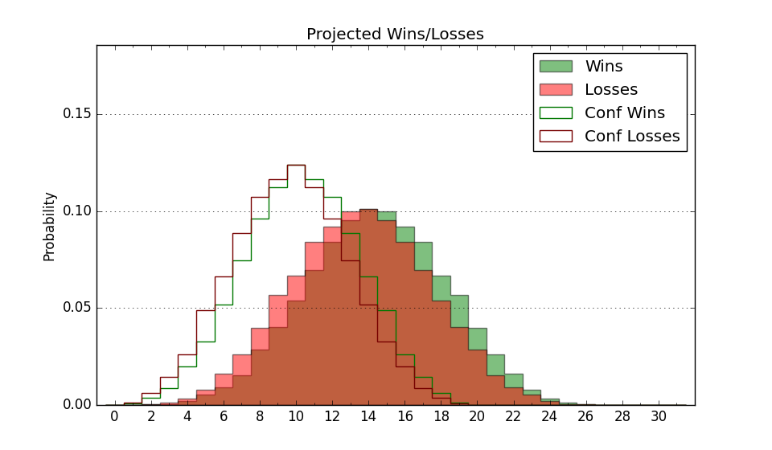

| Home | Game Probabilities | Conferences | Preseason Predictions | Odds Charts | NCAA Tournament |
| City: | Abilene, Texas | |
| Conference: | Western (1st)
| |
| Record: | 0-0 (Conf) 1-0 (Overall) | |
| Ratings: | Comp.: -2.5 (191st) Net: 7.5 (94th) Off: 97.0 (174th) Def: 89.6 (41st) SoR: 76.5 (3rd) |
| Remaining | ||||||
|---|---|---|---|---|---|---|
| Date | Opponent | Win Prob | Pred. | |||
| 11/10 | @ North Carolina St. (73) | 13.1% | L 67-80 | |||
| 11/14 | Prairie View A&M (339) | 86.9% | W 73-60 | |||
| 11/17 | (N) San Jose St. (144) | 40.4% | L 68-70 | |||
| 11/29 | @ UT Arlington (207) | 39.3% | L 68-71 | |||
| 12/2 | Stephen F. Austin (100) | 47.7% | L 72-73 | |||
| 12/6 | Northern Arizona (262) | 78.2% | W 79-70 | |||
| 12/17 | UTEP (173) | 61.5% | W 70-67 | |||
| 12/21 | @ Arkansas (9) | 3.6% | L 60-84 | |||
| 12/30 | @ Western Kentucky (152) | 27.6% | L 69-76 | |||
| 1/6 | UT Rio Grande Valley (274) | 79.7% | W 83-72 | |||
| 1/11 | @ Grand Canyon (111) | 21.8% | L 67-76 | |||
| 1/13 | @ California Baptist (206) | 39.1% | L 67-70 | |||
| 1/18 | @ Tarleton St. (242) | 46.7% | L 69-70 | |||
| 1/20 | UT Arlington (207) | 68.8% | W 72-67 | |||
| 1/25 | Dixie St. (212) | 69.9% | W 76-70 | |||
| 1/27 | Southern Utah (286) | 80.5% | W 77-67 | |||
| 2/1 | Tarleton St. (242) | 74.9% | W 73-66 | |||
| 2/8 | @ Seattle (123) | 23.5% | L 66-75 | |||
| 2/10 | @ Utah Valley (193) | 35.8% | L 72-76 | |||
| 2/15 | @ UT Rio Grande Valley (274) | 53.6% | W 78-77 | |||
| 2/17 | @ Stephen F. Austin (100) | 21.1% | L 68-78 | |||
| 2/22 | California Baptist (206) | 68.6% | W 71-66 | |||
| 2/24 | Grand Canyon (111) | 48.7% | L 71-72 | |||
| 2/29 | @ Southern Utah (286) | 54.9% | W 72-71 | |||
| 3/2 | @ Dixie St. (212) | 40.6% | L 72-75 | |||
| 3/7 | Seattle (123) | 51.1% | W 71-70 | |||
| 3/9 | Utah Valley (193) | 65.5% | W 76-72 | |||
| Previous | Game Score | |||||
| Date | Opponent | Win Prob | Result | Off | Def | Net |
| 11/6 | @Oklahoma St. (62) | 11.2% | W 64-59 | 2.6 | 26.7 | 29.3 |
| Stats & Trends | |||||
|---|---|---|---|---|---|
| Current | Day | Week | Month | Season | |
| Composite | -2.5 | -0.0 | +0.3 | +0.3 | +0.3 |
| Comp Rank | 191 | -- | -- | -- | -- |
| Net Efficiency | 7.5 | -0.1 | -- | -- | -- |
| Net Rank | 94 | -8 | -- | -- | -- |
| Off Efficiency | 97.0 | -0.1 | -- | -- | -- |
| Off Rank | 174 | -11 | -- | -- | -- |
| Def Efficiency | 89.6 | -0.0 | -- | -- | -- |
| Def Rank | 41 | -4 | -- | -- | -- |
| SoS Rank | 55 | -1 | -- | -- | -- |
| Exp. Wins | 14.4 | +0.0 | +1.0 | +1.0 | +1.0 |
| Exp. Conf Wins | 10.3 | +0.0 | +0.1 | +0.1 | +0.1 |
| Conf Champ Prob | 8.7 | +0.4 | +0.9 | +0.9 | +0.9 |

| Advanced Stats | ||
|---|---|---|
| Stat | Value | Rank |
| Off Eff FG % | 0.495 | 127 |
| Off Ast Ratio | 0.139 | 109 |
| Off ORB% | 0.236 | 210 |
| Off TO Rate | 0.174 | 315 |
| Off FT Ratio | 0.248 | 232 |
| Def Eff FG % | 0.471 | 99 |
| Def Ast Ratio | 0.138 | 166 |
| Def ORB% | 0.228 | 56 |
| Def TO Rate | 0.154 | 223 |
| Def FT Ratio | 0.345 | 156 |